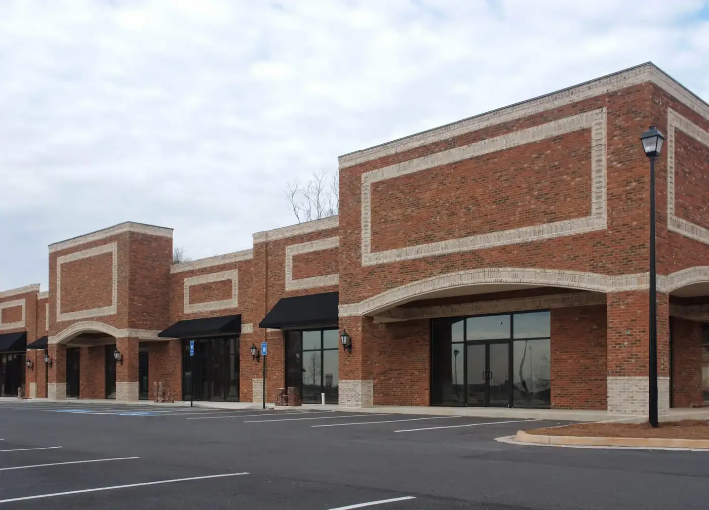

GLASS SERVICES IN LIVE OAK, TX
Commercial and residential glass in Live Oak, with the details in view.
Live Oak has been built out since the 1960s, so most of what we replace here is original — the glass and the frames that came with the house, now somewhere past their fourth decade.
LOCAL GLASS EXPERTISE
Glass work for Live Oak properties.
Live Oak homeowners rely on Master Glass Solutions for custom residential glass, frameless shower enclosures, window glass replacement, and commercial glass services. Our proximity means fast response for both planned projects and emergency repairs.
Live Oak glass work often involves custom residential details, shower enclosures, mirrors, and window glass in larger home settings. Include photos of the room, wall conditions, and access path if the glass is oversized or part of a remodel.
Customers searching locally need a straight answer: what service is available, what information to provide, and how to reach a real next step. This page links directly to the residential, commercial, emergency, storefront, and custom-glass information needed to make that decision.
WHAT WE SEE HERE
Original glass, still in the original frame.
The houses here are a generation older than the subdivisions further north, and it shows in the glazing. Single-pane aluminium frames, sliding patio doors with the rollers long gone, and bathroom enclosures that were framed and tracked because that was what got installed at the time.
None of that has to mean a new window. A pane in a sound aluminium frame is usually replaceable on its own, and a framed shower can often be rebuilt as frameless if the walls and the threshold will take the hardware. What decides it is the condition of what is already there, which is a photo question rather than a quote question.
THE HIGHWAY FRONTAGE
Two kinds of work on one street.
Live Oak sits where Loop 1604 meets I-35, so a few minutes from those 1970s houses there is a concentration of retail, offices and light commercial. We work both, and they are not the same job: a storefront has tempered or laminated glass, a door that has to keep working all day, and a business that cannot be shut while it is fixed.
If a commercial opening goes at an awkward hour the first call is the board-up, not the replacement. We secure it, then come back with the glass at a time that does not cost the tenant a trading day.
Residential glass
Shower glass, mirrors, window panes, and custom home details.
Commercial glass
Storefront, partition, custom, and property-focused glass work.
Emergency glass repair
24/7 support for urgent broken-glass situations.
Custom glass
Made-for-the-space solutions when standard is not the answer.
WHAT TO EXPECT
Start with a useful scope.
Share the property address, service type, timing, photos, and approximate measurements. That helps turn a local search into a more productive project conversation.
FOR URGENT DAMAGE
Call, don’t wait on a form.
If the glass issue affects safety, security, weather protection, or operations, call the 24/7 emergency support line directly.
Call 210-370-3700Do you serve Live Oak?+
Yes. Live Oak is a short run northeast of our office and we cover both the residential side and the commercial frontage along the highway. Window glass replacement, shower enclosures, custom mirrors, storefront glass, glass railings and 24/7 emergency board-up. Buildings only — no auto glass.
Can you replace the glass in an old aluminium window without replacing the window?+
Usually, yes, and it is the cheaper answer by a long way. If the frame is straight and sound, the glass can be cut to the opening and reglazed in place. The frame being corroded, bent or out of square is what pushes it towards a full replacement. A photo of the frame from inside and out, plus the rough dimensions, is normally enough to tell you which one you are looking at.
Can my framed shower be converted to frameless?+
Often. Frameless glass is thicker and heavier, so the question is whether the walls and the threshold can carry the hardware and whether the opening is plumb enough to work without a frame to take up the difference. In a house of this age that is worth checking rather than assuming. Send photos of the whole enclosure including the threshold and we will tell you straight.
Is emergency glass support available in Live Oak?+
Yes, 24 hours a day, seven days a week, including weekends and holidays. Call 210-370-3700 and say what broke, where it is and whether the opening is secure. For a business we board up first so you can open in the morning, and bring the replacement glass back at a time that suits trading.
RECENT WORK
Recent work in Live Oak.
NEARBY SERVICE AREAS
We also serve these nearby communities.
MASTER GLASS SOLUTIONS
Need glass work in Live Oak?
Tell us about the property and the project, or call 210-370-3700 for urgent glass support.